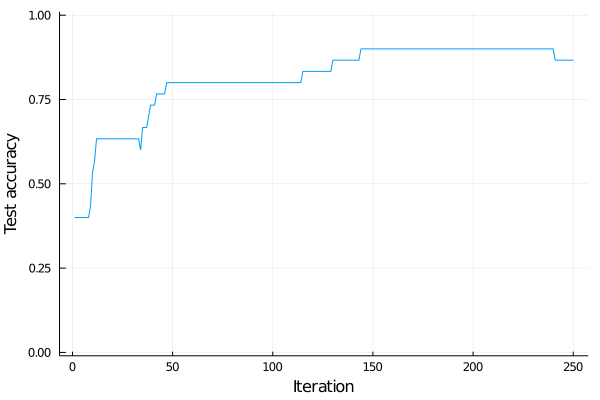

Introduction to Flux
Flux is a library for using neural networks. This part will present the basics of Flux on the Iris dataset from the previous lecture. We include the auxiliary functions from the previous lesson into the utilities.jl file, which we include by
include("utilities.jl")We set the seed and load the data in the same way as during the last lecture.
using RDatasets
using Random
Random.seed!(666)
iris = dataset("datasets", "iris")
X = Matrix(iris[:, 1:4])
y = iris.Species
X_train, y_train, X_test, y_test, classes = prepare_data(X', y; dims=2)Creating the network
We recall that machine learning minimizes the discrepancy between the predictions $\operatorname{predict}(w; x_i)$ and labels $y_i$. Mathematically, this amount to minimizing the following objective function.
\[L(w) = \frac1n\sum_{i=1}^n \operatorname{loss}(y_i, \operatorname{predict}(w; x_i)).\]
To build the objective $L$, we first specify the prediction function $\operatorname{predict}$, which we denote by model m. We start by creating the same network by the function Chain. Its inputs are the individual layers. Dense layers are created by Dense with the correct number of input and output neurons. We also need to specify the activation functions.
using Flux
n_hidden = 5
m = Chain(
Dense(size(X_train,1), n_hidden, relu),
Dense(n_hidden, size(y_train,1), identity),
softmax,
)Since identity is the default argument, it is possible to remove it in the second layer. However, we recommend keeping it for clarity.
We can evaluate the whole dataset.
m(X_train)3×120 Array{Float32,2}:
0.303607 0.309745 0.367206 0.137385 … 0.0179704 0.3824 0.318091
0.467098 0.25595 0.408589 0.170671 0.163688 0.372205 0.350239
0.229295 0.434306 0.224205 0.691944 0.818342 0.245395 0.33167Because there are $3$ classes and $120$ samples in the training set, it returns an array of size $3\times 120$. Each column corresponds to one sample and forms a vector of probabilities due to the last layer of softmax.
We access the neural network parameters by using params(m). We can select the second layer of m by m[2]. Since the second layer has $5$ input and $3$ output neurons, its parameters are a matrix of size $3\times 5$ and a vector of length $3$. The parameters params(m[2]) are a tuple of the matrix and the vector. This also implies that the parameters are initialized randomly, and we do not need to take care of it. We can easily modify any parameters.
params(m[2])[2] .= [-1;0;1]Training the network
To train the network, we need to define the objective function $L$. Since we already defined $\operatorname{predict}$, it suffices to define the loss function $\operatorname{loss}$. Since we work with a multi-class problem, the loss function is usually the cross-entropy.
using Flux: crossentropy
L(x,y) = crossentropy(m(x), y)The loss function does not have m as input. Even though there could be an additional input parameter, it is customary to write it without it. We can evaluate the objective function by
L(X_train, y_train)1.4863017f0
This computes the objective function on the whole training set. Since Flux is (unlike our implementation from the last lecture) smart, there is no need to take care of individual samples.
While the standard definition of cross-entropy is $\operatorname{loss}(y,\hat y)$, Flux uses $\operatorname{loss}(\hat y,y)$.
Since we have the model and the loss function, the only remaining thing is the gradient. Flux again provides a smart way to compute it.
ps = params(m)
grad = gradient(() -> L(X_train, y_train), ps)The function gradient takes two inputs. The first one is the function we want to differentiate, and the second one are the parameters. The L function needs to be evaluated at the correct points X_train and y_train. In some applications, we may need to differentiate with respect to other parameters such as X_train. This can be achieved by changing the second parameters of the gradient function.
grad = gradient(() -> L(X_train, y_train), params(X_train))
size(grad[X_train])(4, 120)
Since X_train has shape $4\times 120$, the gradient needs to have the same size.
We train the classifiers for 250 iterations. In each iteration, we compute the gradient with respect to all network parameters and perform the gradient descent with stepsize $0.1$.
opt = Descent(0.1)
max_iter = 250
acc_test = zeros(max_iter)
for i in 1:max_iter
gs = gradient(() -> L(X_train, y_train), ps)
Flux.Optimise.update!(opt, ps, gs)
acc_test[i] = accuracy(X_test, y_test)
endThe accuracy on the testing set keeps increasing as the training progresses.
using Plots
plot(acc_test, xlabel="Iteration", ylabel="Test accuracy", label="", ylim=(-0.01,1.01))